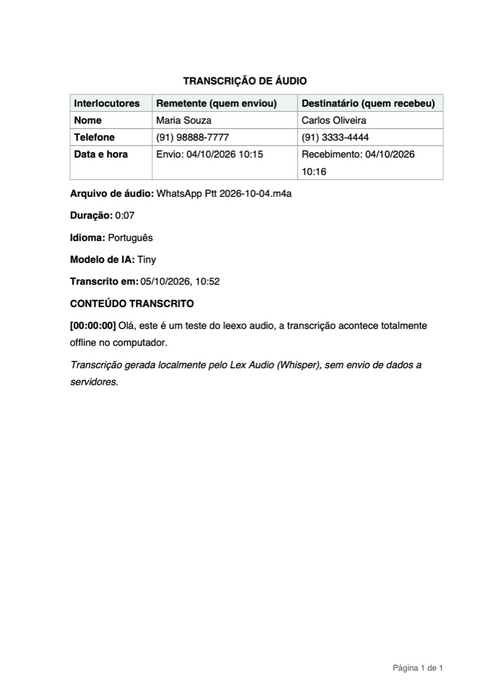

Programa de computador
Lex Audio
Transforme áudio em texto. Totalmente offline.
SituaçãoDisponível
Versão1.3.1
PlataformasWindows, Mac e Linux
PreçoGratuito
O que faz
Recursos principais
- Transcreve áudios de WhatsApp, Telegram, Signal e gravadores (OGG, OPUS, MP3, WAV, M4A e outros), em lote.
- Inteligência artificial (Whisper) rodando no próprio computador: nenhum áudio ou texto vai para a internet.
- Texto ao vivo com marcação de tempo, detecção de idioma e busca.
- Relatório em PDF e Word com timbre do escritório, dados de quem enviou e recebeu e hash SHA-256 do áudio.
- Histórico local com busca; o áudio original não é guardado.
TelasExemplo de transcrição exportada (dados fictícios) · toque para ampliar
Como é o Lex Audio


Manual
Como instalar e começar
- Baixe o instalador:
LexAudio-Windows-Instalador.exe,LexAudio-macOS-Instalador.pkgouLexAudio-Linux.deb. - Siga o assistente (Avançar até Concluir). O Lex Audio abre no navegador.
- O assistente de primeiro uso pede o aceite dos termos, baixa o modelo de IA (uma vez) e cria o seu perfil.
- Arraste os áudios para a tela e acompanhe o texto aparecer.
Modelos
Base (57 MB) para o dia a dia; Small ou maior para nomes próprios e termos técnicos.
Exportar
PDF, Word, TXT ou legendas, um a um ou em lote (.zip).
Atualizar
Instale a versão nova por cima; histórico, modelos e perfil são mantidos.
Importante: A transcrição é automática e pode conter erros; não substitui perícia nem ata notarial.
Dúvidas na primeira abertura? Veja as orientações gerais.